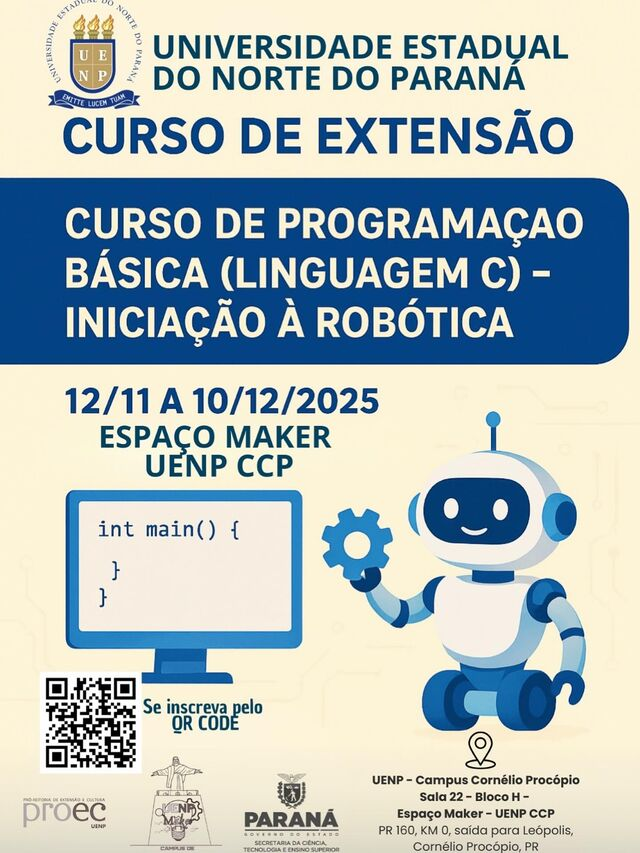
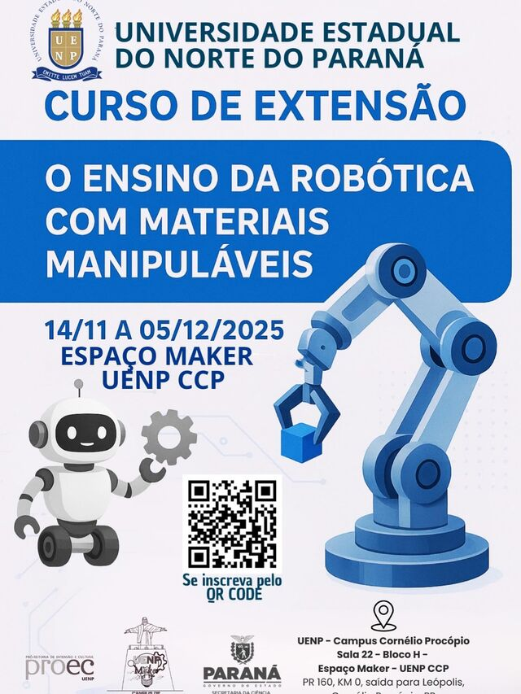
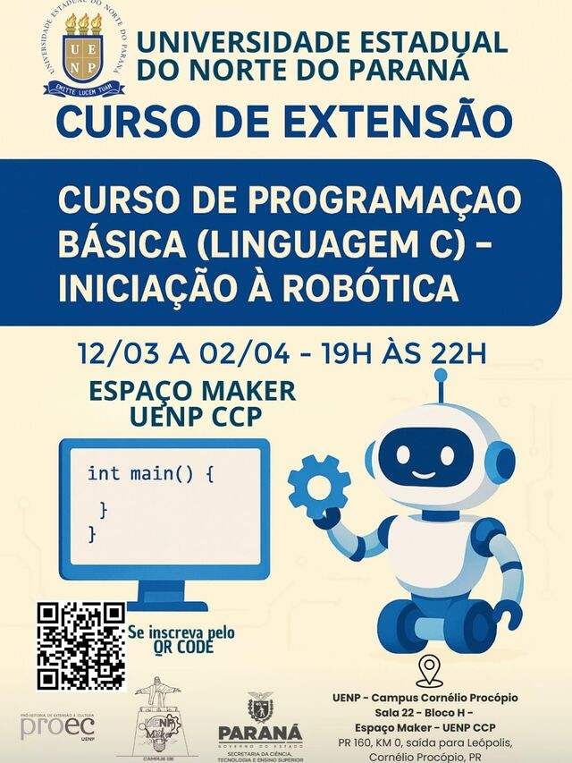
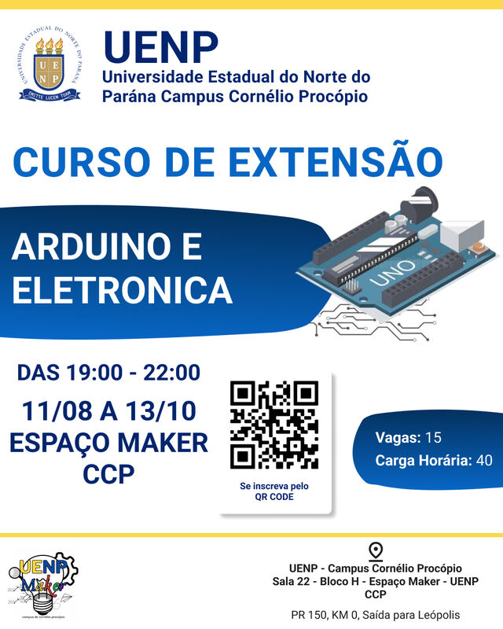
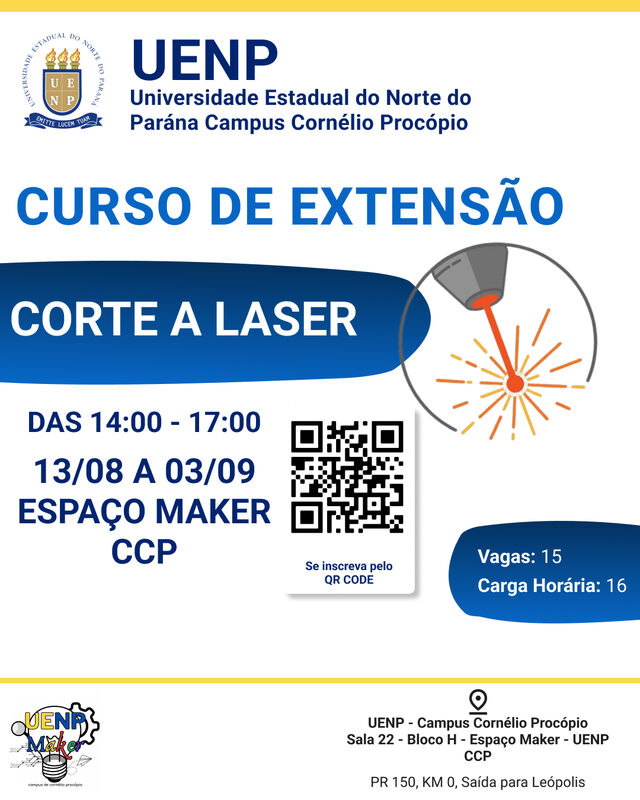
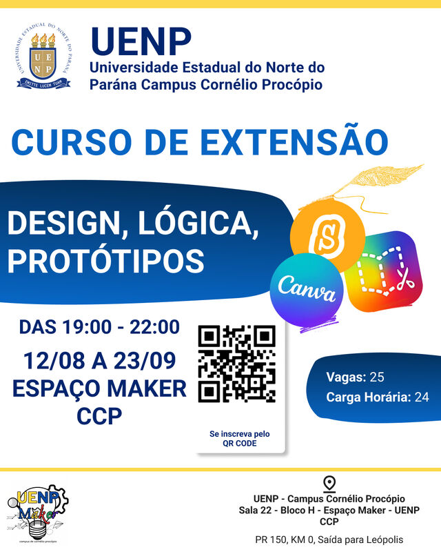
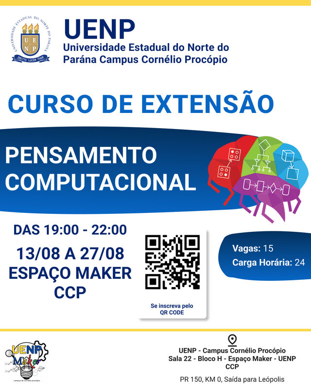

Cursos de extensão já oferecidos no Espaço Maker
O Espaço Maker do Campus Cornélio Procópio já promoveu diversos cursos de extensão no próprio laboratório (Bloco H, sala 22). Relembre o que já aconteceu por aqui.
Programação e robótica


Programação Básica (Linguagem C) – Iniciação à Robótica
- Quando
- 12/11 a 10/12/2025
- Onde
- Espaço Maker UENP CCP
Curso que une programação básica em linguagem C à iniciação à robótica.


O Ensino da Robótica com Materiais Manipuláveis
- Quando
- 14/11 a 05/12/2025
- Onde
- Espaço Maker UENP CCP
Curso de extensão sobre o ensino de robótica com materiais manipuláveis.


Programação Básica (Linguagem C) – Iniciação à Robótica (2ª edição)
- Quando
- 12/03 a 02/04/2026, das 19h às 22h
- Onde
- Espaço Maker UENP CCP
O curso foi oferecido novamente, em turma noturna.


Arduino e Eletrônica
- Quando
- 11/08 a 13/10/2026, das 19h às 22h
- Vagas
- 15
- Carga horária
- 40 h
Introdução à eletrônica e à plataforma Arduino, com a maior carga horária entre os cursos.
Fabricação digital


Corte a Laser
- Quando
- 13/08 a 03/09/2026, das 14h às 17h
- Vagas
- 15
- Carga horária
- 16 h
Curso prático com a cortadora e gravadora a laser do laboratório.
Design e pensamento computacional


Design, Lógica, Protótipos
- Quando
- 12/08 a 23/09/2026, das 19h às 22h
- Vagas
- 25
- Carga horária
- 24 h
Design, lógica e prototipação, com o Canva entre as ferramentas apresentadas.


Pensamento Computacional
- Quando
- 13/08 a 27/08/2026, das 19h às 22h
- Vagas
- 15
- Carga horária
- 24 h
Introdução ao pensamento computacional, base para programação e robótica.
Todos os cursos foram realizados no Espaço Maker UENP CCP (UENP – Campus Cornélio Procópio, Bloco H, sala 22), como cursos de extensão da UENP. As inscrições destes cursos já foram encerradas; acompanhe novas turmas no Instagram @uenp_maker_ccp.